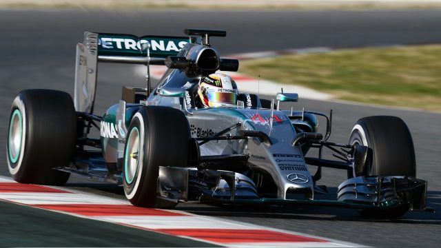
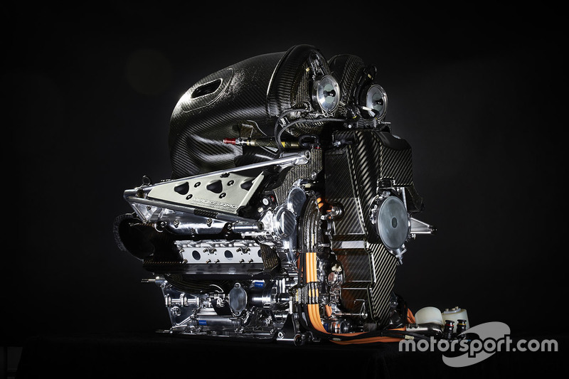

Equipo
Mercedes AMG Petronas Formula One Team1 (nombre comercial de Mercedes-Benz Grand Prix Limited), anteriormente conocida como Mercedes GP Petronas F1 Team es una escudería de Fórmula 1 dirigida por la empresa automovilística alemana Daimler AG, a través de su marca Mercedes-Benz. Se formó en los años 30 y participó en la Fórmula 1 en 1954 y 1955.

El día 16 de noviembre de 2009, con el anuncio de la compra del equipo campeón de la temporada 2009 Brawn GP, anunció su vuelta a la Fórmula 1 por parte de Mercedes a partir de 2010. Con esta adquisición, McLaren (hasta ahora "pareja" de la marca de la estrella en la Fórmula 1) es simplemente un equipo que recibe los motores alemanes, igualmente Mercedes-Benz venderá el 40% de las acciones que posee sobre McLaren, que serán compradas por el equipo de Woking. Estaba previsto que, para 2011, Mercedes se desvincule totalmente de McLaren en lo que respecta a la propiedad del equipo pero esto no ocurrió hasta el 2014, siendo este el último año de McLaren con un motor Mercedes.
El chasis y motor son construidos por Mercedes. Daimler AG es la empresa propietaria de la escudería. El equipo contó en sus filas con Nico Rosberg y al 7 veces campeón del mundo Michael Schumacher, lo que marcó el retorno a la categoría del múltiple campeón desde su retiro en 2006. Su director es Toto Wolff, reemplazando a Ross Brawn (2010-2013). A partir de 2013, el volante de Michael Schumacher pasó a las manos de Lewis Hamilton, quien en la temporada 2014 y 2015 se proclamó campeón del mundo.
Fuente: Mercedes-F1 Thecnical Journalist José Severin
Staff
